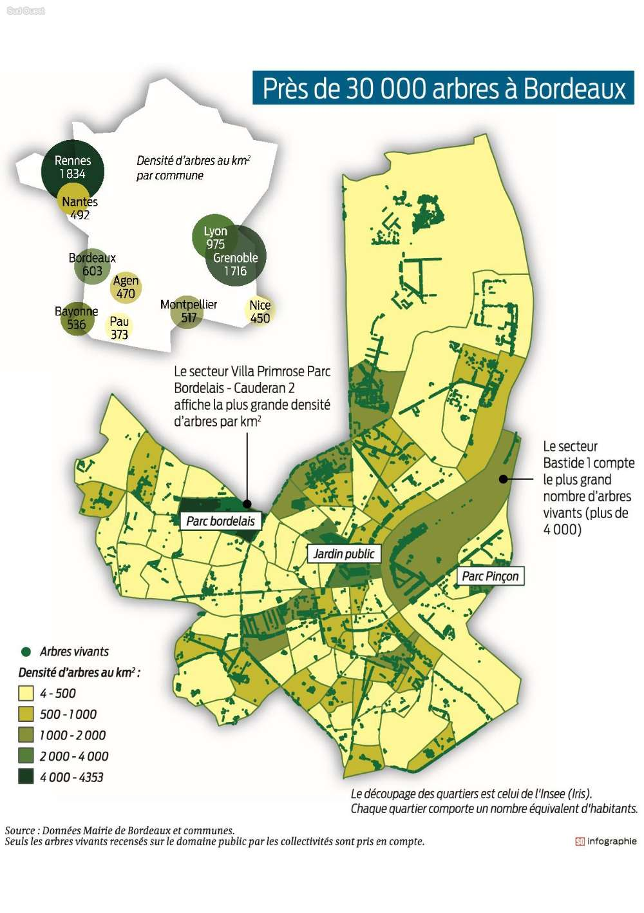

En analysant la superficie des espaces verts de la métropole, on peut remarquer que Bordeaux possède environ 10 000 hectares d’espaces verts, soit une des plus grandes superficies d’espaces verts en France. De plus, on peut également analyser cette fois en pourcentage, la part du couvert végétal dans l’espace artificialisé qui se situe entre 30 et 35%. On peut en déduire de par la présence de nombreux espaces verts une qualité de vie à Bordeaux très importante en faisant donc une des villes le
